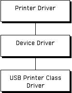
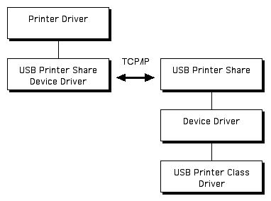

|
|
This Technote
describes how USB printer driver developers can make their
drivers compatible with USB Printer Sharing.
For printer drivers that support it, USB Printer Sharing
provides transparent sharing of printers across a TCP/IP network (including AirPort) and
is a significant added benefit for users. By paying attention
to a few simple guidelines, printer driver developers can
ensure that their drivers work seamlessly with USB Printer
Sharing while retaining the ability to use custom csCodes,
pass pointers to private data, and display the correct
printer name in the Chooser.
This Note is directed at USB printer driver developers who want their
drivers to be compatible with USB Printer Sharing.
Updated: [Jun 19 2000]
|
Introduction
USB Printer Sharing operates by breaking the local link
between a printer driver and its USB printer class driver.
The link between these two drivers is traditionally made using
a pair of device drivers having entries in both the unit table
and the name registry. USB Printer Sharing creates a pair
of device drivers on the client. The client printer driver sends
commands to these device drivers as it normally would, but
instead of passing the commands to a local printer class driver,
the USB Printer Sharing device drivers send the commands over the
network using TCP/IP to a server Macintosh. The serving Macintosh takes the
commands off the wire and invokes the device drivers on the server.
|

A Typical USB Printer Driver
|
|

A USB Printer Driver Running with USB Printer Sharing
|
In order for USB Printer Sharing to work correctly on the client Macintosh,
it must export a name registry entry from the serving Macintosh into the
name registry on the client Macintosh. When the name registry is transferred,
USB Printer Sharing tries to maintain the properties from the serving
Macintosh. For compatibility reasons, however, there are certain properties
that are not transferred. These properties are:
nameprivateDatareadwrite
The most basic compatibility problem occurs when the name registry
contains properties whose data contains pointers into the serving Macintosh's
memory. When this data is transferred to the client Macintosh, these pointers
are no longer valid and when software on the client tries to dereference
the pointers, the Macintosh will either crash or the printer driver will get
incorrect data. See Control and Status Calls for a way
around this problem. In addition to the properties listed above, the USB
Printer Sharing software will not transfer a property whose name ends
with '.private'. For example, the property 'mydata.private' will not
be sent from the server to the client's name registry. Printer software
can use the '.private' suffix naming convention in order to prevent
properties with pointers from being sent across the wire.
Back to top
Printer Name in the Chooser
If a printer driver follows the USB DDK printer driver example,
the printer names shown in the Chooser will be taken from
the name registry. This is the recommended method for determining
the name of a particular printer. There is a maximum length of 31 characters for
name registry names, however, and the names created by USB Printer
Sharing (a concatenation of the printer name, " on ", and the Computer
name as set in the File Sharing control panel) can easily exceed this length.
In order to make this full printer
name available to printer drivers, the USB Printer Sharing software adds
a property, usbps.name, that contains the entire printer
name and can be up to 66 characters in length.
Back to top
Name Registry Properties
Any unique name registry properties created by the USB Printer
Sharing software, as opposed to those simply transferred from machine to
machine by the Printer Sharing software, will be prefixed by 'usbps.'.
Currently there are two such properties:
usbps.name - The full name of the printerusbps.url - The url for the remote printer
Back to top
Handling Errors
It is important that printer drivers check the errors returned
from device driver calls, both those immediately returned and
those in the ioResult field of the IOParam
block for asynchronous calls. Because of the network nature of
USB Printer Sharing, errors (such as host unreachable) are much
more common than local USB errors. Printer drivers should be
prepared for these errors. In particular, a printer driver should
be prepared for an open error as a result of their first read or
write transaction. When the device driver is opened, USB Printer
Sharing begins to connect with the remote printer, but it returns
from open before this potentially long operation is completed.
When the printer driver calls read or write, USB Printer Sharing
may take that opportunity to return an error indicating that the
open failed.
Back to top
Control and Status Calls
In order for USB Printer Sharing to work, it needs to translate a
device driver call made on a local Macintosh into a set of network
packets that can be decoded and sent to a device driver on the
server side. Using pointers in calls to the local device driver
can cause problems as they reference memory on the local machine
and these pointers are not valid on the server. USB Printer Sharing
knows how to handle the buffer pointers that are part of the
device driver read and write calls, but control and status can be
problematic. USB Printer Sharing special cases the following status
call csCodes and knows how to dereference the pointers inherent
in these calls:
kDrvrCentronicsStatuskDrvr1284IdStringkDrvrSoftResetkDrvrNumDevices
In order for USB Printer Sharing to support your custom csCodes, you can
define any number of csCodes for USB Printer Sharing to handle using one
of two methods: Direct or Indirect.
Direct:
In the Direct method, USB Printer Sharing looks for drvrOut.csCodes2
and drvrIn.csCodes2 entries in the Name Registry. If either is
found, its data is taken as an array of shorts representing the extended
csCodes that are Direct csCodes. The Printer Class driver supports these with the following
protocol: the
csParam[ ] array contains 11 shorts that are treated as 22 bytes of raw data,
starting at address &csParam[0]. Please note that USB Printer Sharing does
not handle pointers in the Direct case. Do not include pointers in the 22 bytes of raw data.
If you need to pass pointer-based data, use the Indirect method described below.
Indirect:
In the Indirect method, USB Printer Sharing looks for drvrOut.csCodes1 and drvrIn.csCodes1 entries in the Name Registry. If either is found, its data is taken as an array of shorts representing the extended csCodes that are Indirect csCodes. The Printer Class driver supports these with the following protocol:
|
Data Address
|
Data Size
|
Data Type
|
Description
|
|
&csParam[0]
|
4 bytes
|
pointer
|
A pointer to a buffer that is passed from a device manager client to a device driver (i.e., the printer class driver).
|
|
&csParam[2]
|
4 bytes
|
unsigned long
|
The actual size of the data buffer pointed to by csParam[0]. This value
is passed over to the Server in the case of drvrOut.csCodes1 and back to the
Client in the case of drvrIn.csCodes1.
|
|
&csParam[4]
|
4 bytes
|
pointer
|
A pointer to a buffer that is to receive data returned from the printer class driver.
|
|
&csParam[6]
|
4 bytes
|
unsigned long
|
The maximum size of the data that can be returned in the buffer pointed to by
csParam[4]. Upon return, this value is updated to indicate the
actual number of bytes that were copied into the buffer.
|
Notes:
- The four bytes beginning at
csParam[0] point to a buffer that is
passed from a device manager client to a device driver (i.e., the
printer class driver).
- The four bytes beginning at
csParam[2] are the actual size of the data
pointed to by csParam[0].
- If
csParam[0] is NULL or csParam[2] is 0, then no data is passed from
the client to the server.
- The four bytes beginning at
csParam[4] point to a buffer that is to
receive data returned from the printer class driver.
- The four bytes beginning at
csParam[6] are the maximum size of the data
that can be returned in csParam[4].
- If
csParam[4] is NULL or csParam[6] is 0, then no data will be copied
back from the server to the client.
- The pointers to the buffers in
csParam[0] and csParam[4] may overlap.
To add this capability to the sample PrinterClassDriver, insert the
following pieces of code.
In PrinterClassDriver.c's RegisterDevice() add:
static short ourCSCodes[] = { 200, 201, 202 };
RegEntryID self;
OSErrerr = noErr;
...
if ( err == noErr )
err = RegistryPropertyCreate( &self, "drvrOut.csCodes1",
&ourCSCodes, sizeof (ourCSCodes) );
if ( err == noErr && pPrinterPB->printerProtocol
!= kUSBPrinterUnidirectionalProtocol )
err = RegistryPropertyCreate( &self, "drvrIn.csCodes1",
&ourCSCodes, sizeof (ourCSCodes) );
...
|
In usbprint.c's DRVRStatus() add:
switch ( pb->csCode )
{
case kDrvrCentronicsStatus:
...
case 200:
case 201:
case 202:
// do something useful here
...
}
|
In PrinterClassDriver.c's ControlStatusRequests() add:
switch( ((CntrlParam *) pb)->csCode )
{
case kDrvrCentronicsStatus:
...
case 200:
case 201:
case 202:
// do something useful here
break;
...
}
|
Back to top
Gestalt Information
The Gestalt Selector for USB Printer Sharing is 'zak ' and it returns
the version number of the running server. The version number is encoded
in the low order word in the same manner as the system software version,
e.g., for 1.0 it would be 0x0100 and for version 1.2.3 it would be 0x0123.
The upper two bits in the high order word are used as flags to indicate the
current state of USB Printer Sharing.
- If the bit
0x80000000 is set, then USB Printer Sharing is running.
- If the bit
0x40000000 is set, then USB Printer Sharing was installed at boot time.
- A Gestalt error means that USB Printer Sharing is not installed.
Here are the constants to use for the above values:
|
Constant
|
Value
|
|
kServerSignature
|
'zak '
|
|
gestaltUSBPrinterSharingVersion
|
kServerSignature
|
|
gestaltUSBPrinterSharingVersionMask
|
0x0000FFFF
|
|
gestaltUSBPrinterSharingAttr
|
kServerSignature
|
|
gestaltUSBPrinterSharingAttrMask
|
0xFFFF0000
|
|
gestaltUSBPrinterSharingAttrRunning
|
0x80000000
|
|
gestaltUSBPrinterSharingAttrBooted
|
0x40000000
|
Back to top
Summary
By paying attention to these simple guidelines, printer driver developers
can ensure that their drivers work seamlessly with USB Printer Sharing
while retaining the ability to use custom csCodes and pass pointers to private data.
References
Apple's Printing Technologies
Current USB DDK
Back to top
Downloadables
|

|
Acrobat version of this Note (120K).
|
Download
|
Back to top
|